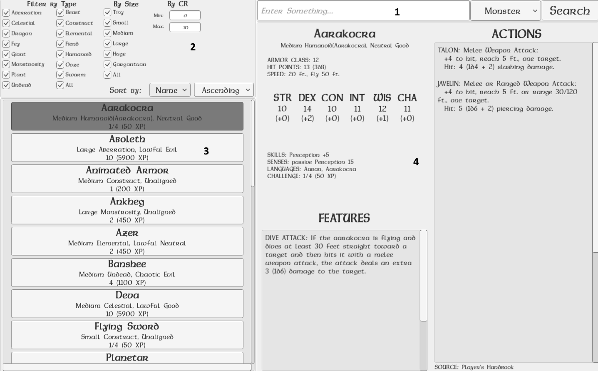

Development
The idea for this program came to me when playing Dungeons and Dragons, and finding it difficult to flip through the books and pdfs (even with the built-in pdf search) to find a particular spell or monster. I wanted the user interface of the program to be the most important aspect, so I decided on building it in Unity3D and C#.
The program stores monsters, items, spells, and other data in an sqlite3 database, using SQLiteStudio, and later DataGrip. In Unity, I created scripts to help insert data into the database (much easier than inserting in SQLiteStudio or DataGrip).
The user interface was made entirely with Unity assets, and Dalelands font. The user interface consists of (1) a search bar, (2) filters, (3) results list, and (4) data display.
The stats and abilities of the champion, Aurelion Sol.
The search bar also includes a drop-down menu which lets you choose what type of data you are searching for (i.e. monster). Entering nothing will list all data of that type.
The filters change depending on the type of data. For example, monsters can be filtered by type, size, or by their challenge rating range. On the other hand, items would be filtered by type, rarity, and value. You can select one or more filters, or you can select the all filter.
The results list is two-part: a sort by section, and the list. The sort by lets you choose how the results are listed. Like the filters, the sorting parameters depend on the data type. The results list will display all relevant data that matches your search parameters. Depending on the data type, additional, important information is listed along with their names (useful for quick glances). Selecting on one of the items in the list will fully display that item on the right-hand side.
The data display displays all information of the selected item in the result list, organized and grouped by category.
Current Status
Planned Features